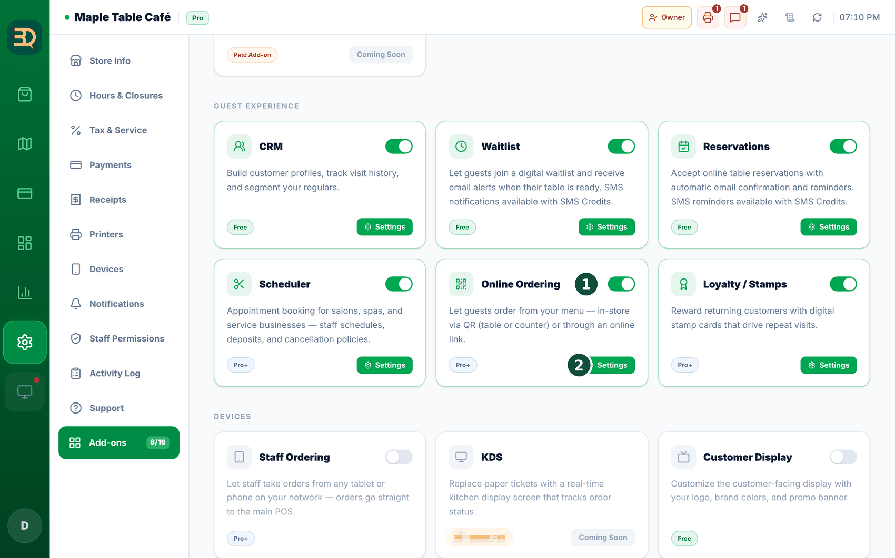
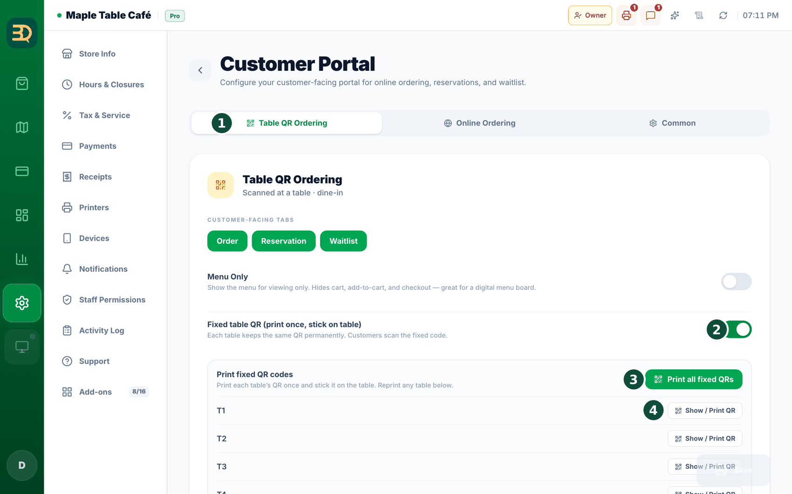
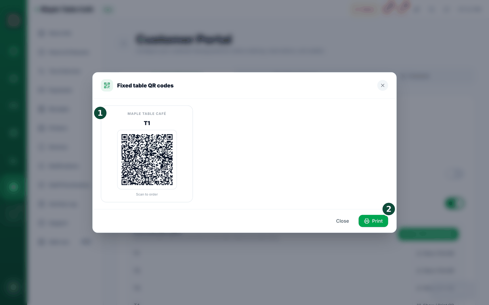
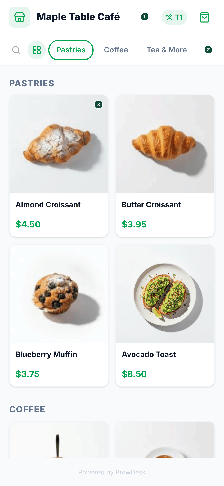

18Pedidos con código QR
Un código QR es ese pequeño cuadrado con un patrón que se escanea con la cámara del teléfono. Con él, los clientes pueden pedir y pagar desde su propio teléfono. No tienen que descargar nada. El pedido por QR es solo para pedir: los clientes ven el menú, agregan productos al carrito y pagan.
Dónde activarlo
Actívelo en Settings › Add-ons › Online Ordering (es el pedido por QR, un complemento Pro). Active el interruptor.




- Vaya a la tienda de complementos en Settings y active el pedido por QR. (Requiere el plan Pro o Business).
- BrewDesk crea un código QR para cada mesa. Toque para imprimirlos.
- Ponga un código QR en cada mesa.
- Un cliente apunta la cámara de su teléfono al código. Su menú se abre en el teléfono del cliente, sin descargar ninguna app.
- El cliente ve el menú, agrega lo que quiere al carrito y paga. El pedido aparece solo en su caja.
No hace falta ninguna app. El cliente usa la cámara normal de su teléfono. No tiene que instalar nada.
Algo que debe saber: la página de pedidos por QR es solo para pedir y pagar. Reservar una mesa (reservas) y unirse a la fila (lista de espera) no forman parte de la página QR; su personal los gestiona en el POS (consulte Reservas y agenda). Así todo es más sencillo para el cliente.
El día a día
Los pedidos por QR necesitan su caja principal encendida. Los pedidos por QR (y en línea) entran a través de su caja principal. Si su caja principal está apagada o sin conexión, los nuevos pedidos por QR se pausan un momento y el cliente ve una breve nota de "vuelva a intentarlo en un momento"; el pedido se procesa en cuanto su caja principal vuelve.
¿Crea el QR de una mesa fuera del horario? Si imprime a mano el código QR de una mesa fuera de su horario de atención, BrewDesk le pide confirmar primero, para que nunca salga un código por error. Las asignaciones de mesa automáticas y masivas no se ven afectadas.
No imprima nuevos QR de mesa mientras internet esté caído. Si su caja no puede comunicarse con BrewDesk e intenta emitir un QR, primero lo detiene: "Check the internet connection — can't issue a table QR.". Un cliente que escaneara ese código haría un pedido al vacío: el pedido no llegaría a su caja. Tome usted los pedidos hasta que vuelva la conexión.
Lo que ven los clientes
Lo que ve el cliente: en su teléfono, un cliente puede abrir My Orders (Mis pedidos) para ver los pedidos de hoy y anteriores, con una cuenta producto por producto. Después de pagar, debe volver a escanear el QR para empezar un pedido nuevo; así se evita agregar por accidente a un pedido ya pagado.
Vista de galería o de lista. Los clientes pueden cambiar el menú del teléfono entre una vista de galería (fotos grandes de la comida) y una lista simple. Los productos sin foto muestran el logotipo de su tienda, así que el menú siempre se ve ordenado. La vista que elija un cliente queda recordada en su teléfono.
Temas relacionados
¿Necesita más ayuda?
Puede enviar un ticket de soporte desde la app en Settings › Support.